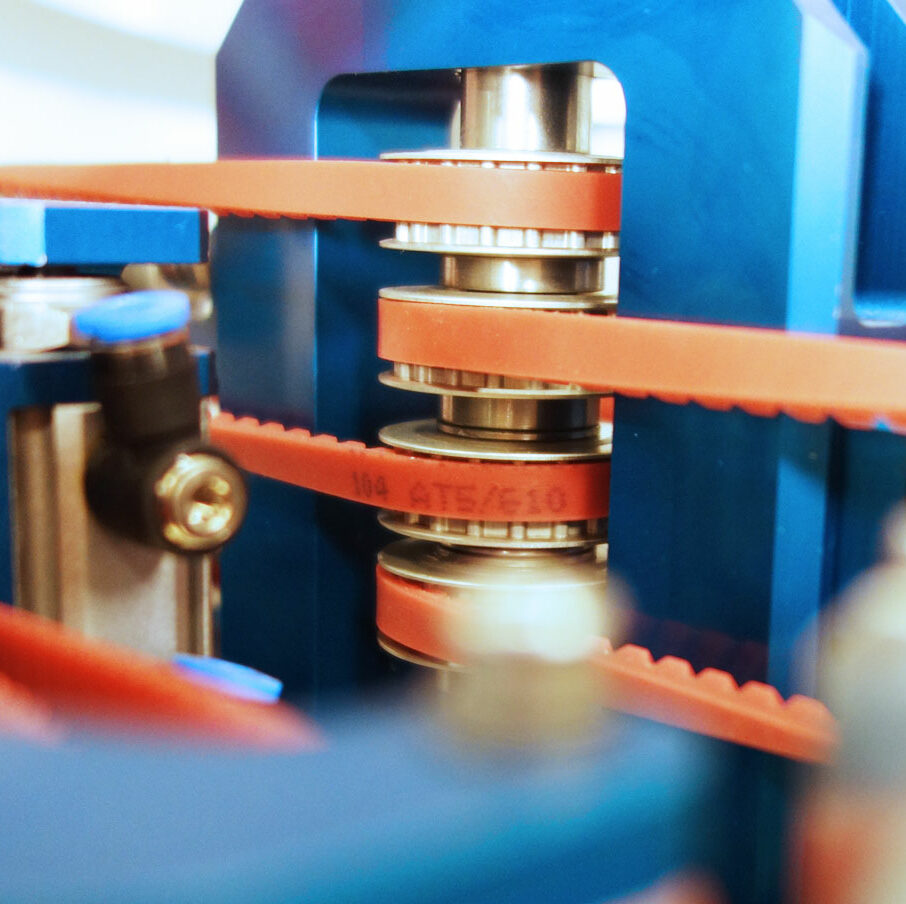
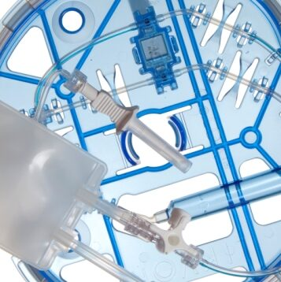
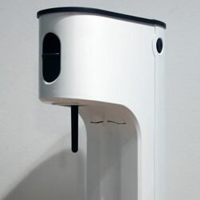
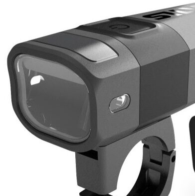

Supporting clients with mechanical design, development and execution
I focus on delivering simple, effective designs and helping projects land in the right balance between quality, time, and budget. I enjoy working closely with product owners and collaborating across disciplines like industrial design, electronics, software, and regulatory to make sure products are not just well‑designed, but also a good fit for the market.
I’m driven by curiosity and a constant desire to learn, which naturally means a lot of time spent with technology. My background ranges from traditional mechanics and manufacturing methods to system‑level work involving electronics, software, and safety. I’m comfortable moving between CAD, the lab, and system discussions, often using prototyping platforms, logging and testing data, and helping R&D teams navigate risk and requirement processes.
Full CV and contact: https://www.linkedin.com/in/davidalind/